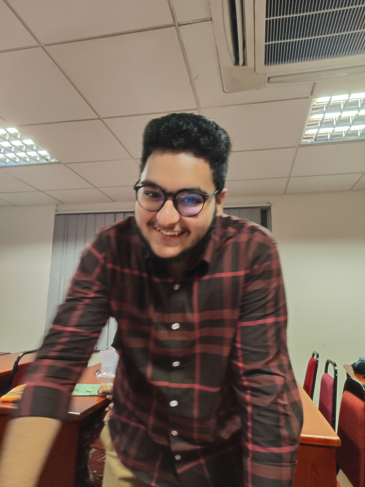
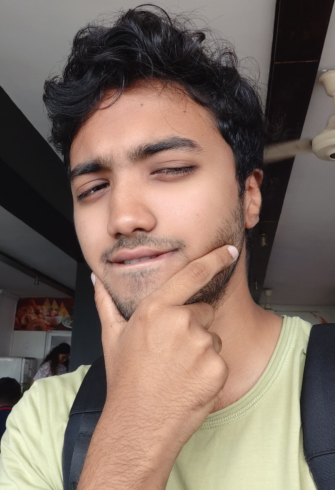

Our Medical Team

Dr. Smith Fatheen - Cardiologist
Dr. Jones Zaid - Pediatrician
Dr. Lee Hafeez - Surgeon

Dr. Brad Rithila - Gynecologist
Why did we choose them?
Dr. Smith has the skills of a quick-witted individual, who has the capabilities and experience to strike a man down to heart and solve anything. Just ask him ;>
Dr. Jones specializes in a very robust field where his traits come from past actions. He may look friendly but under that smile even looks can be decieving.
Dr. Lee. However, is just built different. He thinks 5 steps ahead in the future; he is and will always be a critical thinker. This man is so advanced even women tremble. If anyone can fix your relationship, he can. Oh, and he is a world-class surgeon.
Dr. Brad is unparalled, he treats everyone like food. If he finds you delicious he'd open you up, examine you make you the best of you, If you are not delicuous he'd turn you inside out and make you feel you can do anything.